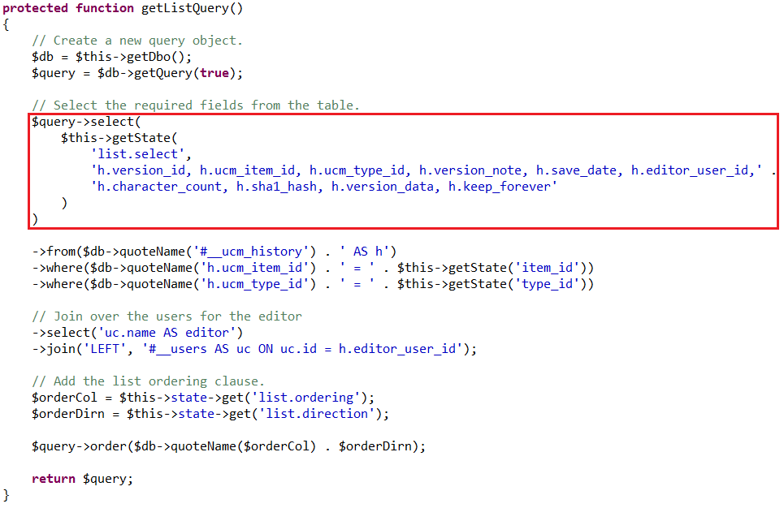

WEBカテゴリーの問題
Web技術に関する問題
ウェブアプリケーションの脆弱性を突いて（XSS・SQLインジェクション・OSコマンドインジェクションなど）サーバ内に侵入し、フラッグを奪取することで得点となる。
Webアプリケーションを作成する人がセキュリティを知らないと大変なことに・・・
攻撃方法を知ることで安全なアプリケーションを作れる！
PHPやJavaScriptの言語仕様の細かな知識が必要
Webアプリケーションを作成する人がセキュリティを知らないと大変なことに・・・
攻撃方法を知ることで安全なアプリケーションを作れる！
PHPやJavaScriptの言語仕様の細かな知識が必要